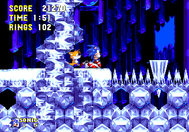

Transgresser les règles (Ernest va au cinéma)
L'article original est écrit par Ernest Adams publié par Gamasutra (juillet 2000).
L'auteur original n'est en aucun cas reponsable de la précision de cette traduction.
Attention, spoiler ! Cet article dévoile certains éléments du film Matrix, bien que jusqu'à ce samedi soir, j'étais probablement la seule personne dans le monde occidental qui ne l'avait pas encore vu. Il est donc peu probable que ceci gâchera le plaisir de mes lecteurs.
Nous, les développeurs de jeux vidéo, nous adorons les films sur les ordinateurs, surtout s'ils parlent de réalité virtuelle et autres concepts cools dans le même genre, alors j'ai pensé que je ferais mieux de regarder Matrix. Après tout, je me suis précipité pour aller voir Tron au cinéma quand il est sorti, et ceci s'est avéré être une expérience fascinante. Non ? Vous n'avez pas adoré cette scène où Bruce Boxleitner embrasse passionnément… un programme informatique ? Je vous l'accorde, elle ressemblait à une femme, mais le film explique sans ambiguïté qu'il s'agit d'un morceau de code. Bon, j'admets qu'à l'occasion, j'ai moi-même été tenté, après m'être débarrassé d'un bug particulièrement vicieux dans mon code, de donner à mon moniteur un petit bisou, une petite bise de rien du tout pour célébrer ma victoire. Mais je n'ai jamais vraiment pensé à rouler une pelle à un sous-programme et franchement, j'ai du mal à imaginer ce que Bruce Boxleitner a pu retirer de cette expérience.
Donc, je suis finalement allé voir Matrix. Wow ! Un film où absolument tout se passe à travers un filtre vert ! Cool. Je n'y aurais jamais pensé. Alors, comment est-ce qu'il s'en sort comme film sur les ordinateurs ? Eh bien, pour commencer, je lui donne un 10/10 pour le style. Il y a tout ce qu'il faut : des costumes moulants noirs et brillants, un environnement urbain réaliste, des lunettes de soleil inutiles, le tout chargé de violence gratuite au ralenti. Joli travail de caméra. Dommage que tout soit vert, mais peu importe – les mondes projetés par les ordinateurs sont toujours verts, on dirait (sauf pour Quake qui est marron). Quoi qu'il en soit, mon cool-o-mètre était au maximum du début à la fin.
Quelque éléments de l'intrigue sont un peu faibles – une résurrection invraisemblable, celle de Tank, et une résurrection un peu plus excusable, car Neo est littéralement un deus ex machina — mais dans l'ensemble, c'est intéressant, bien que les allégories bibliques me donnent d'habitude envie de hurler à l'auteur : « Trouve toi ta propre intrigue, espèce de feignasse ! ». Il y avait quelques incohérences aussi, mais avec suffisamment d'effets spéciaux un film peut bien se passer de logique, non ?
Cependant, il y a une chose qui a rompu mon immersion : la prémisse du film. En gros, c'était quelque chose comme « les êtres humains humains sont cultivés par des machines diaboliques afin de récupérer ce que leurs corps produisent – de l'électricité et de la chaleur. »
Je suis désolé, mais c'est tout simplement stupide. Ce n'est pas simplement que ce n'est absolument pas pratique – je suis prêt à faire semblant qu'il est possible d'y arriver en travaillant suffisamment dur. Ce qui est stupide, c'est que c'est complètement inutile. Il y a cette petite chose qu'on appelle la première loi de la thermodynamique, dont je suis certain que toute machine diabolique digne de ce nom la connaît par cœur. Cette loi énonce tout simplement que vous ne pouvez pas extraire plus d'énergie d'un système que vous n'en faites entrer dans ce système. Les machines dépensent nécessairement plus d'énergie afin de maintenir ces humains vivants – sans compter la simulation du monde artificiel – qu'ils n'en récupèrent. Imaginez si, à la place des humains dans les cuves, les machines diaboliques gardaient des rangées de hamsters, chacun dans sa propre roue, le tout relié à un générateur. Ils doivent encore nourrir les hamsters ! Et l'énergie dans la nourriture pour hamster doit être supérieure à l'énergie produite par les hamsters. Ils feraient mieux de brûler cette nourriture dans une centrale électrique à la place.
Petite parenthèse : d'où la nourriture pour hamster tient-elle son énergie ? Du soleil, mais bien sûr dans Matrix, les humains ont bloqué la lumière du soleil, donc les machines ne peuvent pas produire de graines pour nourrir les hamsters. Mais il y a encore le charbon, le pétrole, le gaz, l'uranium, le vent, les marées et l'énergie géothermique à exploiter – n'importe lequel de ces moyens serait plus efficace que d'utiliser des humains ou des hamsters.
Donc, 10/10 pour le style, mais seulement 3/10 pour savoir de quoi ils parlent. Maintenant, je suis sûr que ce n'est pas un point de vue très partagé. Je peux déjà entendre les râleurs dire : « Eh mon gars, t'es un sacré nerd ! Ce film était totalement incroyable et faut vraiment être un gros geek pour pinailler sur la première loi de la thermodynamique dans un film aussi génial. »
Et je plaide coupable. Ma tolérance à l'ignorance scientifique, du moins dans des mondes où la science compte, semble s'amenuiser peu à peu. Par exemple, je suis absolument livide face à la décision du Kansas State School Board d'exclure l'évolution du programme des écoles publiques [NDT : et il n'est pas le seul]. Matrix est un techno-thriller, et à mon avis, il devrait être impeccable sur ce point — du moins sur les éléments qui concernent le cœur de l'intrigue.
Ceci dit, je sais bien que je joue les hypocrites. Sonic est un hérisson irradié avec des chaussures de tennis rouge, bordel. Moi, qui travaille dans l'industrie du jeu vidéo, j'ai vraiment du culot pour exiger des autres médias qu'ils respectent les lois de la nature. Et puis qui est-ce que ça intéresse après tout ?

Eh bien, parlons-en. En fait, en tant que game designer, vous devez être très attentifs à savoir qui ça intéresse et ce que votre public acceptera ou n'acceptera pas. Il y a cette qualité que possèdent les bons jeux et sur laquelle je n'arrive pas à mettre un nom. Ce n'est pas la crédibilité : la plupart des jeux vidéo ne sont absolument pas crédibles. C'est plus que simplement créer une forme d'immersion. Je peux seulement la décrire en creux : quand un jeu ne la possède pas, les joueurs se mettent souvent à engueuler leur écran et à balancer leur manette. C'est cette qualité qui consiste pour un jeu à être fidèle à ses propres règles, à lui-même et au joueur [NDT : on pourrait peut-être parler de cohérence interne ?]. Si vous escroquez le joueur, si vous le trompez, si vous l'arnaquez ou si vous faites quelque chose qui n'a aucun sens (ou pire encore, qui nécessite que le joueur fasse quelque chose qui n'a aucun sens), alors cette qualité vous échappe.
Cette qualité, quelle qu'elle soit, n'est pas la même d'un genre à l'autre. Il y a plusieurs manières d'enfreindre les règles du monde réel dans un jeu vidéo, et les conséquences ne sont pas toujours les mêmes.
Il y a d'abord la physique sous-jacente dans une simulation. Le type qui a dirigé l'équipe de développement 3DO d'EA était titulaire d'un doctorat en physique, et il insistait sur le fait que les jeux 3DO qui simulaient le monde réel – comme John Madden Football, pour prendre un exemple complètement au hasard – devaient avoir une physique réaliste. Donc, l'équipe a travaillé et travaillé pour rendre la physique aussi réaliste que possible. Ceci a eu exactement les conséquences auxquelles on peut s'attendre, et au final, ils ont enlevé toute cette physique réaliste. Après ça, le jeu est devenu bien meilleur.
Il est très courant de tricher avec la physique dans les simulations. Le fait que ça fonctionne ou pas dépend de ce qui vous pousse à le faire. Si vous le faites pour améliorer le gameplay, comme c'était notre cas, alors allez-y et que Dieu vous bénisse. Si vous le faites pour rendre le jeu plus difficile, en créant une situation où un joueur a du mal à faire face parce que ça ne ressemble pas au monde réel, alors j'estime que vous trichez. Il y a des moyens plus honnêtes pour équilibrer votre jeu.
Mais supposons que nous ayons brisé une autre règle du monde réel : les règles du football elles-mêmes. C'est absolument interdit. M. Madden ne tolèrerait jamais ça, pas plus que nos clients. Dans les jeux de sport, c'est un domaine où on ne peut pas tricher. Si vous simulez un sport du monde réel, vous devez respecter les détails du sport, sinon les joueurs, sans oublier les critiques, vont vous passer un savon.
Les simulations d'engins militaires sont un autre domaine où vous devez respecter les règles — la plupart du temps. Les fans de matériel militaire connaissent les moindres détails de l'équipement et ils veulent que la simulation soit exacte du point de vue de l'apparence et du point de vue de la performance. Cependant, tous les gens qui achètent des simulations de vol ne sont pas forcément des grands fans de matériel militaire. Certains d'entre eux veulent juste voler et faire péter des trucs. Pour eux, vous devez faire en sorte que l'avion soit facile à piloter et que les commandes soient assez simples pour faire péter des trucs. Plus important, vous devez faire savoir à vos clients quel genre de jeu de simulation vous leur vendez : soit un jeu hyper-précis, soit un jeu clair et facile. Il faut que ce soit clairement indiqué sur la boite et lors de la campagne publicitaire. Si vous êtes ambigus sur ce point, vous serez probablement perdant sur les deux tableaux.
Alors qu'en est-il de la science-fiction, comme dans Matrix ? La science-fiction enfreint tout le temps les règles. Comment décider quelles sont celles avec lesquelles nous pouvons tricher ? Pour commencer, distinguons le fait de tricher pour des raisons de gameplay et celui de concevoir une prémisse qui va à l'encontre des connaissances scientifiques actuelles. Tricher pour le gameplay est acceptable. Une prémisse impossible peut être acceptable ou non : cela dépend de ce que le public acceptera d'avaler. Une chose qui n'est pas acceptable c'est que tout soit permis. C'est l'un des problèmes avec le personnage de Superman : l'étendue de ses pouvoirs semble immense et dans le film, il réussit même à inverser le cours du temps. Non, désolé, mais là, ils m'ont largué : s'il peut faire ça, il peut arranger tout et n'importe quoi.
D'un autre côté, une technique de science-fiction séculaire consiste à briser une seule règle et de voir ce qui se passe ensuite. H.G. Wells a parfaitement réussi cela dans La Machine à remonter le temps et aussi dans L'homme invisible. Ses protagonistes sont des humains normaux et sont soumis à toutes les faiblesses humaines, mais l'un peut voyager dans le temps et l'autre est invisible. Ses romans explorent les conséquences possibles de tels pouvoirs – c'est dégrisant dans le premier cas, tragique dans le second. Je vous suggère d'essayer de briser le minimum de règles possibles. Plus vous brisez de règles, plus votre jeu perd en crédibilité, voire gagne en ridicule.
L'autre chose à prendre en compte, c'est à quel point la violation est flagrante, et si oui ou non elle est bien connue du public. Prenez l'hyperespace, par exemple. La plupart des histoires de science-fiction dans l'espace dépendent d'une certaine forme de voyage à vitesse supraluminique. La théorie de la relativité d'Einstein semble l'interdire dans un espace normal, mais ça ne nous empêche pas de spéculer sur l'hyperespace, les trous de vers ou autre chose du genre pour arriver au même résultat. Le public est habitué à ça, et vous n'êtes pas obligé de dire avec précision comment ça fonctionne – en fait, ça vaut mieux si vous ne le faites pas. Han Solo parle de « passer en vitesse-lumière » et c'est tout ce qu'il y a à savoir.
Cependant, vous devez éviter des choses que le public trouvera absurde de façon évidente. L'hyperespace n'est pas vraiment absurde, parce que rien dans notre expérience au quotidien ne l'interdit a priori. J'ai trouvé l'idée qu'exploiter des humains pour récupérer leur chaleur corporelle était complètement absurde, mais j'imagine que la plupart des gens qui ont regardé Matrix n'y ont pas pensé plus que ça. Dans Le mystère Andromède, Michael Crichton [NDT : c'est, entre autres, l'auteur de Jurassic Park] a émis l'hypothèse d'une forme de vie qui fonctionne sans protéine. Là, c'est hors de mon domaine de compétence. Les biologistes doivent probablement trouver ça drôle, mais je ne suis pas assez instruit pour le savoir, et ça ne me dérange pas. D'un autre côté, l'intrigue n'est pas centrée là-dessus non plus. La révélation-clef du film [attention spoiler !], c'est que l'organisme en question ne peut survivre que dans une fourchette de pH très étroite – l'équilibre entre acidité et alcalinité. C'est tout à fait crédible, parce que les organismes de la Terre sont sujets aux mêmes limitations.
Quand vous faites des jeux dans un style fantasy ou cartoon (et je place Sonic et la plupart des autres jeux d'action dans cette catégorie), alors débarrassez vous des règles. La magie existe, les dragons crachent du feu, des ours transportent des oiseaux dans des sac à dos – ce que vous voulez. Ça ne veut pas dire qu'il ne faut pas qu'il n'y ait pas de règles : je veux dire par là qu'il faut que vous écriviez les vôtres. Elles doivent avoir un sens dans le contexte de votre monde, et vous éviterez ainsi que le joueur jette sa manette en criant « Mais c'est n'importe quoi ! ».
Vous pouvez proposer un véritable challenge au joueur, vous pouvez le frustrer (dans une certaine limite). Mais vous devez éviter tout ce qui pourrait le mettre en colère, ou pire, s'attirer son mépris ou son dégoût. Les jeux vidéo sont des mondes à part entière : les règles sont faites pour y être brisées. Mais soyez conscients que vous êtes en train de les briser et choisissez soigneusement celles que vous brisez.
Ajouter un commentaire
Commentaires

La cohérence de l'univers qui doit suivre ses propres règles sans forcément être "réaliste" se nomme la suspension consentie de l'incrédulité.
Grosso modo c'est ce que tu expliquais, l'univers n'a pas besoin d'être crédible dans la vraie vie mais il doit être cohérent et logique selon les règles qui définissent cet univers, c'est pour ça que voir un sorcier qui peut jeter un sort avec une baguette ne nous rebute pas tant que dans son univers, c'est cohérent.
D'ailleurs en général je pinaille sur la science mais j'ai jamais pensé à la 1ère loi de thermodynamique pour la culture d'humains (même si j'me disais que de l'éolien était probablement une meilleure idée que tout ce casse-tête)
Ce que tu appelles "crédibilité", Nietzsche nomme ça "vraisemblable", dans "La naissance de la tragédie", qui reprend, appliqué aux arts et notamment au théâtre, quasiment mot pour mot ce que tu décris, l'effet d'acceptabilité pour le spectateur/joueur.
Les théories d'Einstein sur l'espace-temps sont un peu dépassées de nos jours, et on sait (on pense) déjà que des éléments d'une taille inferieure a 10 puissance -42 metre peuvent voyager plus vite que la lumière :p (après un vaisseau spatial est un peu plus gros que ça).
Sinon, autre truc que je voulais dire, une règle cassée bien précise sur laquelle on ne s'acharne pas à expliquer l'origine mais les conséquences aide même à donner une intimité au le joueur/spectateur/lecteur avec l'œuvre. Je peux prendre mon exemple favori : la boussole d'or, livre dans lequel les héros peuvent se balader dans différents mondes mais sont les seuls (ou presque) à le savoir.
Superbe article, très bien écrit. Un régal dans l'analyse !
C'est un peu mieux cette histoire de puissance de calcul par l'addition des cerveaux, mais ça tombe sous le même paradoxe du gain trop faible comparé à l'investissement, si ces machines ont un tel niveau (pour déjà générer un monde alternatif et toutes ses subtilités jusqu'au gout de la bouffe et les odeurs de pets bovins en passant par la quantité astronomique d'insectes en tous genres…) elles n'ont que faire d'un peu plus de "puissance de calcul" donc dans tous les cas c'est pas super crédible si on creuse assez, par contre effectivement c'est plus habile et moins tiré par les cheveux mais dans le film ça aurait été trop relou d'expliquer de cette façon et Morpheus n'aurait pas pu faire sa ptite pub DURACELL au passage…
Je sais que c'est une traduction mais c'est toujours intéressant. A la base, les humains dans Matrix n'étaient pas "cultivés" pour récupérer leur énergie, mais pour rassembler leurs cerveaux et ainsi avoir une "puissance de calcul" énorme. Ça n'a pas fait son chemin jusqu'au film car ça ne serait pas bien passé pour le grand public (d'après le producteur ou quelqu'un dans ces eaux là) et donc que l'autre explication était bien plus simple.